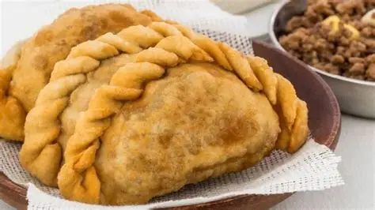

RECETAS
RECETA DE UNA TUCUMANA

Ingredientes
Harina
Pollo
Cebolla
Papa
Arvejas
Aji colorado
Huevo duro
Sal y comino
Aceie
Agua
Preparacion
Cocinar el pollo y desmenuzarlo
Cocinar la papa y cortarla en cubitos
Freir la cebolla y agregar el aji colorado
Agregar el pollp, la papa y las arvejas. Condimentar con sal y comino
Colocar el relleno sobre la masa y agregar un poco de huevo duro
Cerrar y repulgar las tucumanas
Freir en aceite caliente hasta que esten doradas
Servir caliente
Hecho por:
Wilfran Flores
👾